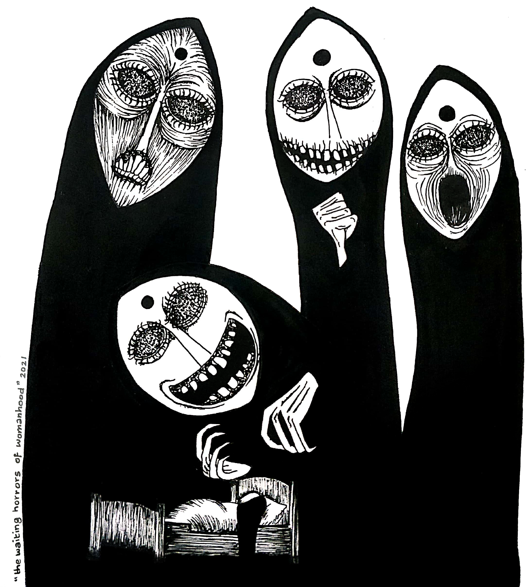

WHEN I WAS THIRTEEN AND THOUGHT I WAS PREGNANT
You’re 13 years old, living in a boarding school, and everybody around you is getting their period. The dorms burst into teasing celebratory roars each time a horrified girl becomes a “lady.”

Your mother tries to give you a talk about what to expect during your period, but the whole experience is so mortifying and embarrassing that you scathingly tell her to leave you alone.
You’re paranoid each time you feel pain in your abdomen. It feels like a cloud of anticipation and dread looms over you at all times.
Then one day, you see a slight red tinge during a bathroom break in-between classes and it has you rushing to the dorms in panic. You don’t have a pad, so you search for a dormmate’s open locker and steal one from it.
The packaging of the pad always gave an impression of a square tissue inside it. But opening it reveals a shape and object you’re so entirely unfamiliar with, you have no indication of how to unwrap and wear it.
After fifteen minutes of no success, you open dustbins to search for used pads. You pluck out a bloodied one and hold it between two fingernails as you inspect it for clues.
After some haphazard experiments and confusing results, you waddle back to class while the teacher is still teaching. With elaborate signs and whispers, you communicate to your seatmate that you don’t know if you wore the pad correctly.
Your seatmate draws diagrams at the back of the science textbook and, in hushed whispers, illustrates what you did wrong. You again go to the washroom to fix the pad and return to the classroom, confused but a bit relieved.
For the next few days, the pads remain entirely white. There is an obvious absence of stomach pain, but you count yourself as one of the lucky ones and shrug it off.
If the blood doesn't return for the next few months either, you shrug that off too. You’re one of the lucky ones.
You’ve never been one of the “girly” girls. You pride yourself on being “different” as you keep your hair short and wear t-shirts from the boys’ section. And the more your chest develops, the more prominent the curve in your spine grows as you slouch to hide it.
Your mother-tongue is Hindi, a language that forces its speaker to express their gender as masculine (था) or feminine (थी) in every sentence.
For the lack of a neutral grammatical gender, you take to using the masculine (था) because you firmly believe you’re not like the other girls. And because imitating your older brother in every aspect of life makes the differences between the two of you feel lesser.
Your choice of pronouns remain a catalyst for arguments and attempts at correction by your grandmother who loudly proclaims you’ll never get married if you don’t speak like a “proper” girl. Your mother sighs each time you run to the boys’ section for clothes, and your father—
Your father, with all the care and concern in the world, gently, albeit a little awkwardly, tries to tell you that what you’re going through is a phase ("puberty," he says). And while it is accepted at that age, it won’t be tolerated by society when you’ve grown up.
“Outgrow it,” he says as you both lie in bed in the dark, the only time that allows emotional talks with your father, “or you’ll become somebody who is humiliated by everybody.”
You pretend to be sleepy and give an incoherent reply as you turn to face the wall. You're not old enough to understand his words, but you lie awake, feeling the fear anyway.
You discover that pressing your legs together can be pleasurable. You don’t understand what it truly is, but you have an inkling that it is something that cannot be seen by the other girls in your dorm.
A girl in your dorm gets admitted in the school hospital, and unlike the dorms where everyone is segregated by age, the hospital has girls admitted from all age groups. It is a place of giggles and whispers and misguided learnings from seniors about illicit activities.
When the girl returns from the hospital with her newfound knowledge, she loudly demands to know who in the dorm has older brothers. You raise your hand in confusion, and she points at you haughtily as she proclaims that your brother—
You learn that masturbation is something all boys do, and that it is because they need to toss out the old semen in order to generate newer, fresh semen.
You act appropriately disgusted and everybody laughs.
At night, you admit that masturbation seems familiar. And when you recall your father talking about puberty and changing hormones and outgrowing your behaviour before you regret it, you wonder, with a growing sense of dread, if this is what he was talking about.
With every act of self-pleasure, the guilt grows.
You’re masturbating, you’re sure of it now. But if only boys masturbate, then it means that you’re becoming a boy with every act of self-pleasure.
You can’t become a boy, you think through tears and delirium as you dig your nails into your thighs and clamp your mouth shut to keep from making noise.
It is a punishment, you tell yourself, and it’ll prevent you from ever indulging yourself again.
You’re older now, nearing 15, and talks of periods occur frequently on the breakfast table. When you’re asked, you can’t recall when you last had your period. You tell them that, and your friend jokes that you’re probably pregnant. You laugh along with her.
At night, you consider whether that’s truly the case. If you’re partially male and partially female, perhaps masturbating actually caused you to become pregnant with your own self.
Terror is now your constant companion at night, and with no way of reaching out to parents and no internet to run embarrassing queries on—speaking to your batchmates is shameful horror unlike anything else—you’re left with just one option:
You ignore it and go to sleep.